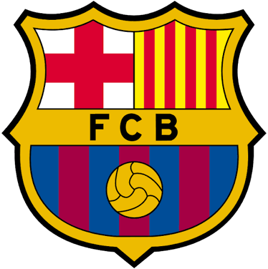
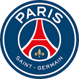
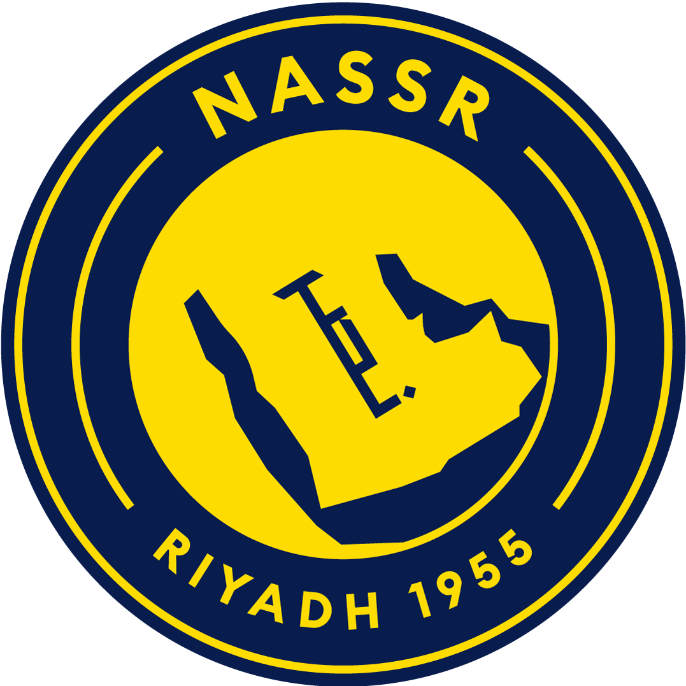

Real Madrid
The Identity: Spain's most prestigious club, famed for its winning culture and a record 15 Champions League titles.
- Thibaut Courtois: Main Goalkeeper.
- Trent Alexander-Arnold: Right-Back.
- Antonio Rüdiger: Central Defender.
- Éder Militão: Central Defender.
- Ferland Mendy: Left-Back.
- Aurélien Tchouaméni: Defensive Midfielder.
- Federico Valverde: Central Midfielder
- jude Bellingham: Attacking Midfielder.[one of the best in the club]
- arda guler
- Rodrygo: Right Winger.
- Kylian Mbappé:striker [best in the club]
- Vinícius Júnior: Left Winger.[one of the best in the club]
- [even both the ronaldos [CR7 and R9] and sergio ramos and david beckham and zenadine zidane [all the goats] played for this club]

barcalona
The Identity: FC Barcelona's identity centers on "Més que un club," combining proud Catalan nationalism with a democratic, fan-owned system of 140,000 socios.
- Joan García (Goalkeeper).
- Jules Koundé (Right-Back).
- Pau Cubarsí (Center-Back).
- eric García (Center-Back).
- Alejandro Balde (Left-Back).
- Rodri (Defensive Midfielder).
- Pedri (Central Midfielder).
- Dani Olmo (Attacking Midfielder).
- Lamine Yamal (Right Winger)[best in the club].
- Xavi Espart (Right-Back).
- Raphinha (Left Winger / Team Captain)[one of the best in the club].
- anthony Gordon (Striker).
- (neymar jr and lionel messi and ferran torez and lewandoski played for this club)

psg (Paris-saint-germain)
PSG's identity:Ici c'est Paris," blending capital-city glamour and high-fashion culture with immense financial power.Backed by Qatar Sports Investments, the club is built on dominating French football using star-studded rosters and global pop-culture appeal.
- Lucas Chevalier (Goalkeeper)
- Achraf Hakimi (Right Back)
- Marquinhos (Center Back)
- Willian Pacho (Center Back)
- Nuno Mendes (Left Back)
- Warren Zaïre-Emery (Midfielder)
- Vitinha (Midfielder)
- João Neves (Midfielder) [played with ronaldo]
- Ousmane Dembélé (Right Winger) [the best in the club]
- Khvicha Kvaratskhelia (Left Winger)
- Ferran Torres (Striker) [one of the best in the club]
- (Kylian Mbappé,Lionel Messi,Neymar Jr,Zlatan Ibrahimović, David Beckham and Ronaldinho have played for this club)
manchester city
The Identity:Manchester City's identity is centered on their nickname "The Citizens" and the club anthem "Blue Moon."Once defined by Manchester's working-class roots and underdog status, the club's modern identity is shaped by immense financial backing and a legacy of dominant, possession-based tactical football.
- Gianluigi Donnarumma (Goalkeeper)
- Matheus Nunes (Right Back)
- Rúben Dias (Center Back)
- Marc Guéhi (Center Back)
- Joško Gvardiol (Left Back)
- Elliot Anderson (Midfielder)
- Enzo Fernández (Midfielder) [one of the best
- Rayan Cherki (Midfielder)
- Antoine Semenyo (Right Winger)
- Iliman Ndiaye (Left Winger)
- Erling Haaland (Striker) [the best in the club]
- [kevin de bruyne played for this club]

manchester united
The Identity: Manchester United's identity is built on their nickname, the "Red Devils," representing a legacy of resilience, attacking football, and global commercial dominance.
- Diogo Dalot Right Back
- Harry Maguire Center Back
- Lisandro Martínez Center Back
- Patrick Dorgu Left Back
- Kobbie Mainoo Defensive Midfield
- Youri Tielemans Defensive Midfield
- Bruno Fernandes Attacking Midfield [playes with ronaldo in portugal]
- bryan Mbeumo Right Winger
- Marcus Rashford Left Winger
- Matheus Cunha Striker
- [cristiano ronaldo and mo.salah played for manchester united

all nassr (not in champions league in saudi pro league)
The identity:The main reason for Al Nassr's global popularity is Cristiano Ronaldo. His arrival in January 2023 immediately transformed a historic regional club into a worldwide phenomenon, skyrocketing their social media following to over 62 million and expanding their match broadcasts to over 140 global territories.
- Bento - Goalkeeper
- Sultan Al-Ghannam - Defender
- Mohamed Simakan - Defender
- Iñigo Martínez - Defender
- Nawaf Boushal - Defender
- Abdullah Al-Khaibari - Midfielder
- Samú Costa - Midfielder
- Ângelo Gabriel - Midfielder
- João Félix - Forward
- Sadio Mané - Forward
- Cristiano Ronaldo - Forward [the best in the club and the best in football (alive players)]